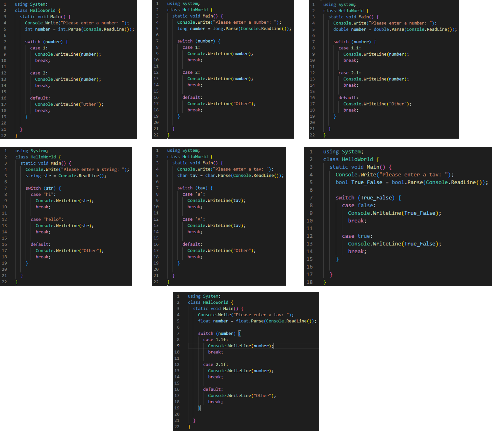

Switch Case
?Switch Case מה זה
.הוראת בחירה :Switch Case
כשנרצה לבצע פעולה/פעולות Switch Case - נשתמש ב
.if אחרי שנקלט ערך מסוים שנבחר לפני הריצה, כמו
:נסביר
?break; מה היה קורה אם נוריד את
!הודעת שגיאה
default case - מה היה קורה אם נוריד את ה
?שמתאים לערך שנקלט case כשאין
!Switch Case - התוכנית תדלג על ה
,לא חייב לקבל רק ערכים מסוג מספר שלם Switch Case
:אלא את כל הסוגים הקיימים
.int, long, float, double, string, char, bool

.Switch Case - בתיקייה הבאה תוכלו למצוא דוגמה לשימוש ב
התיקייה